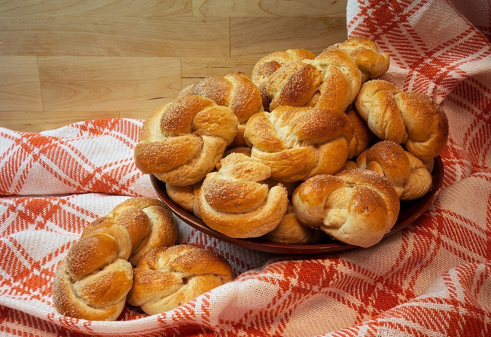

店のこと
店のこと
お店について確認できているのは、所在地・電話番号・Instagramのアカウントです。
確認できていること
- 店名は「ベーカリーショップトム」、業種はベーカリー
- 所在地は三重県伊勢市宮町1丁目12-18(〒516-0077)
- 電話番号は0596-23-5255
- Instagramのアカウントは@tombakerytom
- 営業時間・定休日・メニュー・価格・ご予約・駐車場は準備中

想像してみる(制作側の連想)
「トム」という響きから
このセクションは制作側が想像して書いたもので、お店の実際の様子・考え・商品とは関係がありません。
由来は分かりません。制作側は、2文字のカタカナの短さと丸い響きから、手に取りやすい小さなパンを思い浮かべました。ただし、実際にどんなパンを扱っているかは分かりません。詳しくはお店のInstagramをご覧ください。
